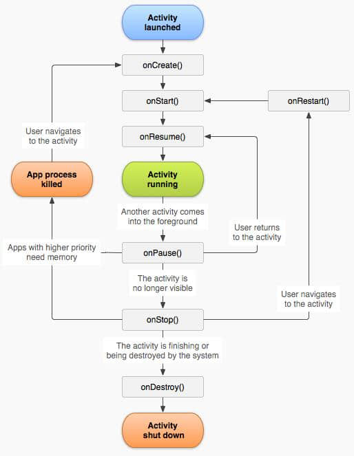
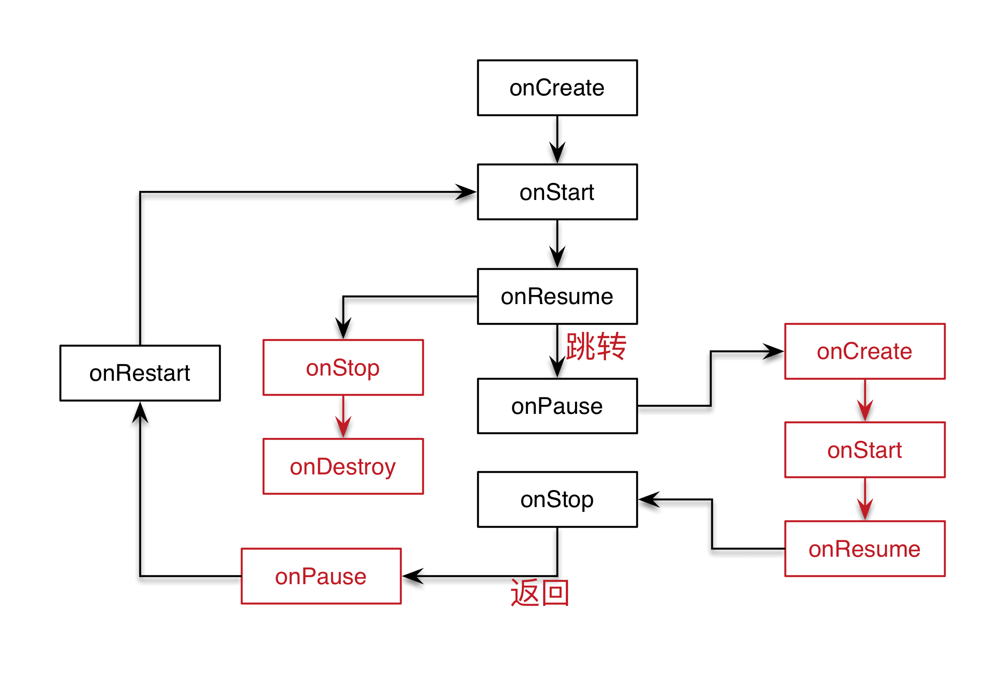
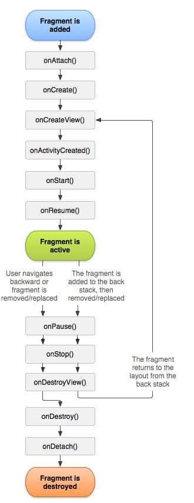
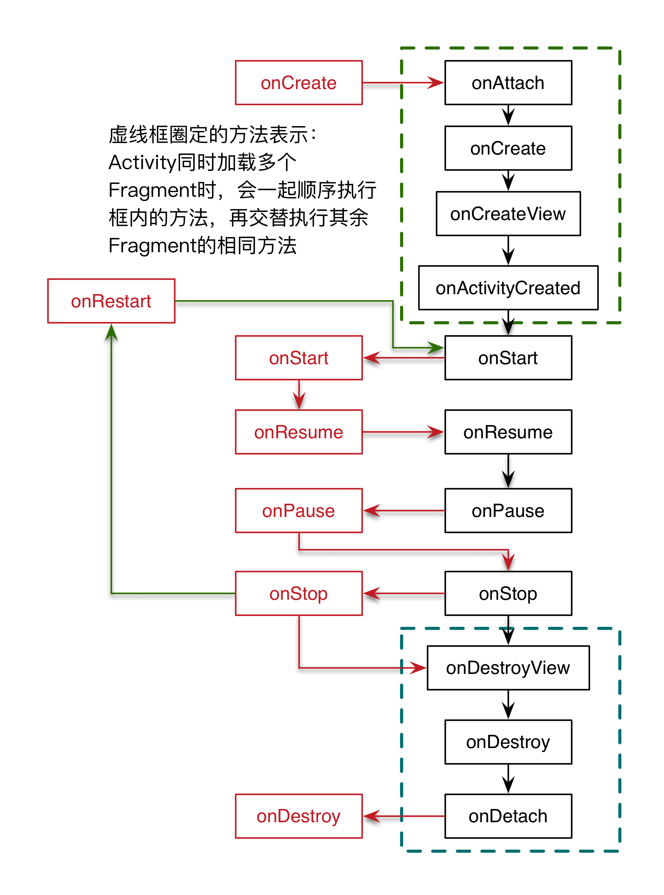
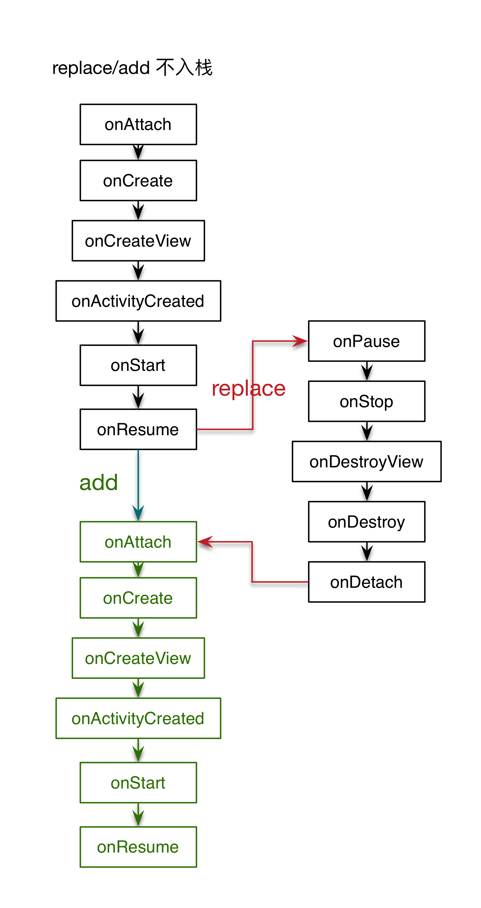
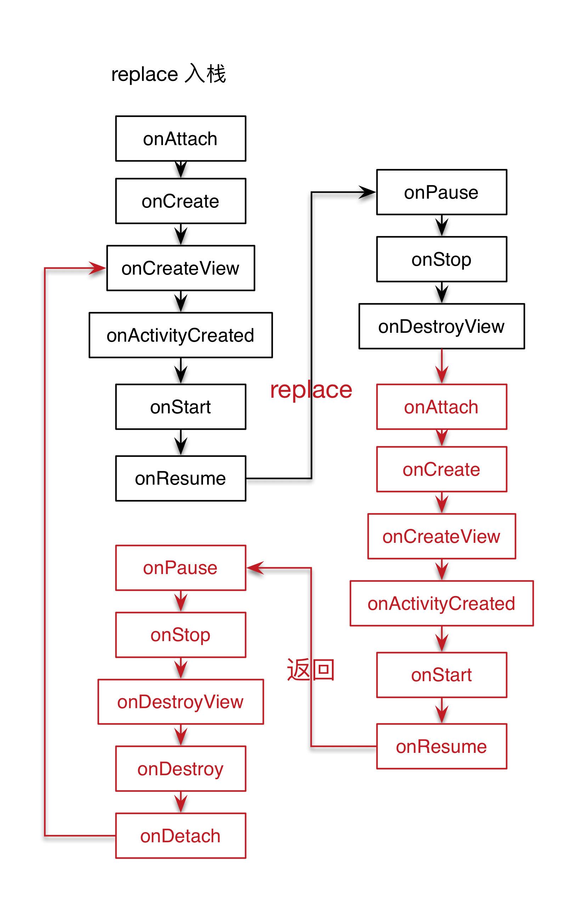
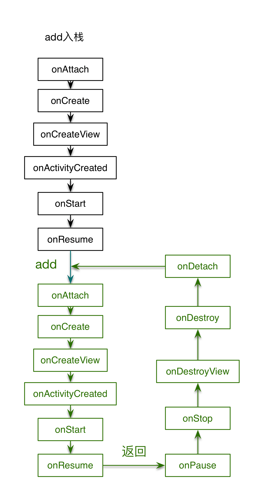

Activity&Fragment生命周期详解
生命周期，是初学Android必须要掌握的一个知识点，也是面试时最常问的知识点。最近突然发现，公司架构中关于fragment使用的代码还不够完美。因此先决定先巩固一遍Fragment生命周期，连带着Activity生命周期（两者之间还是有很大的关联），再尝试改善现有代码。关于生命周期的概念，个人觉得，设计Android的工程师们，很大程度上参考了IOS。
Activity生命周期介绍
Activity生命周期共有7个，可以按照3+1的模式去记忆。
这是一张标准的生命周期示意图，从上图中可以看出，onCreate<–>onDestory，onStart<–>onStop，onResume<–>onPause 3对，多出一个onRestart。
启动一个Activity，会依次执行onCreate（创建一个Activity时调用，可通常在此处指定Activity的布局或动态设置Activity主题）、onStart（启动这个Activity时调用，此时Activity已经可以见，但是未获得焦点不能响应用户事件）、onResume（Activity获取焦点时调用，此时可以响应用户事件）方法。
通常调用onPause（Activity停止响应用户事件，在切换Activity、锁屏、弹出dialog，准确说是Dialog风格的Activity，普通的dialog是属于Activity的，生命周期不变化、按下Home键时调用）方法之后，很快就会调用onStop（Activity不可见，已经停止时调用，Activity再次恢复可见状态时，需要重新调用onRestart方法）方法。当调转一个dialog 主题的Activity时，前一个Activity只会进入pause状态，而不会触发onStop。
执行onStop方法之后，若需要再使该Activity可用，先调用onRestart（重新启动Activity，该Activity实例占用的内存还未被释放，无须重走onCreate方法）再调用onStart、onResume。
Activity被销毁时，会执行onDestory（释放Activity实例占用的内存，等待系统回收。或强制中断APP进程时调用。），此时标志这个这个Activity生命周期完整的结束。
综上，Activity生命周期又可以分为三类：
- onCreate—>onDestory，整体生命周期
- onStart—>onStop，可视生命周期
- onResume—>onPause，焦点生命周期
切换Activity时生命的周期变化
跳转
相同颜色表示同一个Activity。跳转到下一个Activity或返回到上一个Activity时，都会使当前Activity失去焦点（onPause）。当前Activity获取焦点时（onResume），再去处理上一个Activity的onStop方法，是否调用onDestory方法由Activity栈、或系统根据此时内存情况决定。
按返回（Back）键
按返回键，会调用Activity的finish方法，首先会执行onPause，如果Activity栈中还有activity，就执行这个activity的onRestart方法，若没有则继续执行onStop–>onDestory。
按home键
按下home键，通常会将应用切到后台，执行onPause–>onStop方法。当内存不够时，系统会根据一定策略选择杀死一个应用进程，或者用户手动杀死这个应用进行都会导致之前的activity执行了onDestory方法。
实际开发中，是无法通过onKeyDown 捕获Home键按下的事件（捕获Back键是可以的），经过上述分析得知，按下Home键和返回键不同的地方是在于有没有调用finish方法。因此在执行onStop方法时，可以通过判断是否执行了finish方法，进而判断按下的是否是home键。此处注意区分按下锁屏键效果同按下Home键。
Fragment生命周期介绍
这依旧是一张经典的fragment生命周期示意图。相比Activity中，7个生命周期的方法，fragment生命周期共涉及到11个方法，记忆和理解起来有一定的难度。此处推荐4+4+3记忆方式。先看下图：
这张图凸显出，Activity和Fragment之间生命周期的关联。在弄懂Activity生命周期的前提上，去理解Fragment生命周期有着事半功倍的效果。
启动Activity时，如果Activity中已绑定了Fragment，那么也会同步创建Fragment。创建Fragment时，会连续执行4个生命周期方法：onAttach（同Activity绑定），onCreate（创建Fragment实例），onCreateView（创建Fragment视图），onActivityCreated（Activity创建完成）。
接下来的4个生命周期将和Activity的四个同名生命周期交替执行。如：先执行Fragment的onStart 再执行Activity 的onStart，继续执行Activity的onResume 到Fragment 的onResume，自此Activity已经完成启动过程，绑定的fragment也已经显示，并能够获取到焦点响应用户事件。切换Activity：先执行Fragment的onPause到Activity的onPause再执行Fragment的onStop到Activity的onStop。此时，Activity连同Fragment已经失去焦点且已经不可见。
结束Activity时，会连续执行Fragment的三个生命周期：onDestoryView（销毁Fragment视图），onDestory（销毁Fragment实例），onDetach（与Activity解绑）。最后执行Activity的onDestory，表示Activity已经销毁。
上述中，若Activity绑定多个Fragment，那么多个Fragment的相同生命周期一定是交替执行了，除了虚线框内标记的是连续执行。
切换Fragment时生命周期的变化
加载fragment有两种方式
1 | <!-- 方式一 --> |
方式一类似于添加一个控件，程序运行时不可以动态修改。其中，name属性是用户定义fragment类完整的类名（包括包名），id或tag属性则是在代码中通过findFragmentById或findFragmentByTag获取到fragment对象。并且，该fragment生命周期同其所在的Activity生命周期绑定。
方式二指定一个fragment容器，程序运行时可以通过replace 或add 方法动态加载指定的fragment。动态加载fragment，需要考虑到fragment切换时，fragment生命周期的变化。只要不切换Activity，fragment生命周期改变时，Activity生命周一直处于onResume状态。
切换fragment 可以通过replace 或add方式，与此同时，考虑到是否将fragment 入栈管理，所以切换fragment共有四种场景。当不入栈时，replace 和add 生命周期变化很相似，因此放在一起讨论。
replace/add fragment 不入栈
不入栈时，表示切换fragment之后，并不保存之前fragment 实例的引用。因此也就无法再操作之前的fragment。add 和replace 的却别是，replace会将之前的fragment移除，重新添加一个fragment，add 则在之前fragment之上再添加一个fragment，倘若被add fragment的背景是透明的，依然会看见之前fragment的样式。
通过上图的周期流程图中，不难发现replace 和add 的区别。
replace fragment 入栈
此时替换fragment时，首先会移除当前fragment的视图（onDestoryView），但是没有删除当前fragment的实例（没有调用onDestory和onDetach），因为该fragment已经入栈（依然保留着fragment实例的引用）。然后再添加新的fragment，直到新fragment获取到焦点（执行到onResume）截止。若按下返回键，会移除栈顶的fragment，也就是当前可见的fragment，使下一层fragment可见。但是需要再次初始化页面（执行onCreateView）。
add fragment 入栈
这种场景最简单，切换fragment后，新的fragment在栈顶，点击返回时，将栈顶的fragment出栈，使下面的fragment可见。因为add方式是叠加的，所以之前的fragment依旧是可见的，生命周期没有任何变化。
replace 和 add fragment 入栈的异同点
相同点：由于入栈是可返回的，因此切换和返回就完整的执行了一个fragment的全部生命周期。
不同点：replace方式会消除之前fragment的视图，当之前的fragment再次回到栈顶，会再次调用onCreateView，初始化页面，包括所有用户数据。